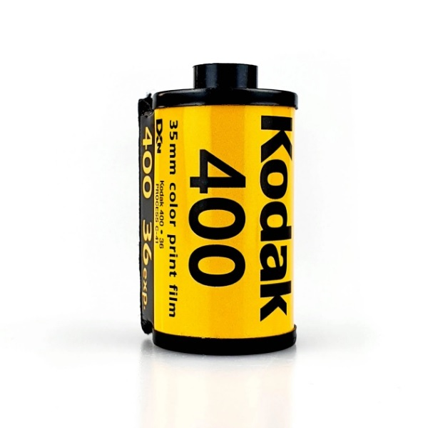
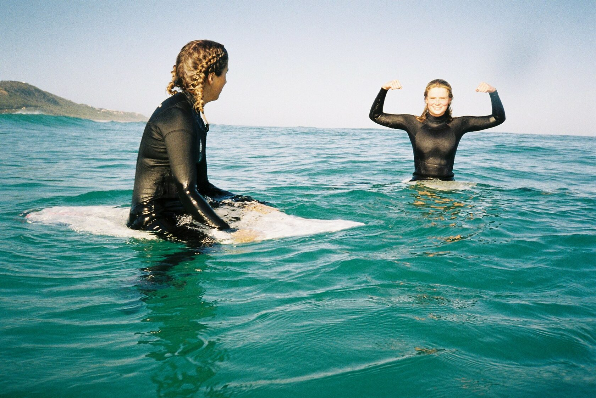
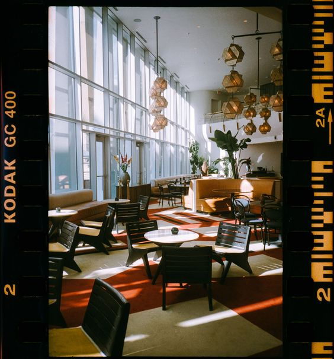

Как фотографировать на плёнку Kodak Ultramax 400 и получать идеальные фотографии

Kodak Ultramax 400 — универсальная любительская плёнка для 35-мм камер. У неё яркие цвета и выраженное зерно
Подходит для пейзажей, портретов, лайфстайла, путешествий

Обзор плёнки Kodak Ultramax 400
Кодак Ультрамакс не такой популярный, как Kodak Gold 200.
У него нет ореола всеобщей любви.
Не смотря на это, Kodak Ultramax 400 прикольная плёнка!
Как ведёт себя Kodak Ultramax 400
Если переэспонировать Кодак Ультрамакс 400 как будто у него ISO 200, вы получите
традиционный для плёнок Kodak увод скинтона в желтизну. Все плёнки Кодака так себя ведут
и если у вас получились неестественно жёлтые фото, значит вы косячите с экспозицией в плюс.
Лучше всего ваши фотографии на Kodak Ultramax будут выглядеть при экспозиции по номиналу,
т.е, с ISO 400. Если ваша камера автоматически считала DX-код, просто не мешайте ей делать своё дело.
Эта плёнка абсолютно универсальна, подходит для помещений и съёмки круглый год.
Экспонируйте Kodak UltraMax как 400-ку и вы получите естественный тон кожи, яркие цвета и
правильный контраст.
Замеряйте освещённость сцены по теням, если у вас контрастная сцена. Если объект не на
открытом солнце, смело замеряйтесь по светлым участкам, чтобы получить естественный скинтон.